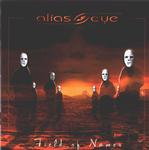

| Artist: | Alias Eye |
| Title: | Field Of Names |
| Label: | DVS Records DVS003 |
| Length(s): | 54 minutes |
| Year(s) of release: | 2001 |
| Month of review: | [09/2001] |
| 1) | Field Of Names | 4.52 |
| 2) | Premortal Dance | 5.13 |
| 3) | Wasteland | 5.26 |
| 4) | Just Another Tragic Song | 6.17 |
| 5) | Driven | 7.49 |
| 6) | River Running | 6.21 |
| 7) | Hybrid | 4.04 |
| 8) | Mystery | 3.32 |
| 9) | The Readiness Is All | 5.19 |
| 10) | An End In Itself | 5.11 |
Continuez avec Wasteland which is a rather pacey piece and which has some Spocksy Beardian organ. The vocal melodies are again spot on. At first I was afraid that the band had shot their best shots with their first three songs, but this is also a good one with some moody soft jazzy passages, but also prog metal guitar work.
Ballad time on Just Another Tragic Song. Griffiths has shown so far to have a very warm and pleasant voice, both at home in the lower and somewhat higher regions. This ballad does not continue to be soft and sweet, because there are some more forceful parts in here. However the softer moods dominate. It is my feeling that these songs all stand up in their own right, not because of flashy technique or effects, simply because the melodies stick and the songs make sense.
The opening of Driven is even more ballad like with quite a bit of piano, but with some Beard influences as well: the organ, the harmony vocals, they do sound a bit familiar. However, the rest of it is typically Alias Eye. The pace of the song is rather slow, also in the long guitar solo, which does sound a bit mellow because of it. Later the solo becomes more focussed, sharper. The band follows up with moody piano and acoustic guitar and the vocal part starts over. Quite an emotive voice. Then the brimming organ returns with a bass bobbing along, and some distorted guitar as well, in this way going for a bit of complexity. The uplifting chorus ends the track.
River Running is another one of the old tracks. This track owes quite a bit to Spock's Beard (listen to the opening sequence). The song is rather waltzy. A wonderfully catchy chorus this one has. The drums work a bit like the bobbing of the waves. It has a bit of that quickness that also Gordian Knots Rivers Dancing has, although unlike the latter, this song also has a very classically styled piano passage. The Beard epigonism comes back later in the track.
Hybrid sounds a bit awkward at first with adverse rhythms and singing. In a way the band comes close the more compositionally oriented bands on Inside Out (Poverty's No Crime for instance), but does not sound like definite prog metal. Again the band loses some classical piano on us during the track and at once I am very reminded of Queen here (and now I think of it, there were some earlier moments of that as well). At times the music becomes very playful here. Really a hybrid of more or less everything.
Mystery is the shortest track so far and the music becomes almost like fanfare music in the middle. A weird combination, but it does not even sound artificial, just fun.
On The Readiness Is All we hear the father of the vocalist singing along. He used to sing with Beggar's Opera (a prog band in the seventies). Their voices are quite similar, but the father sings a bit higher. The bass playing is thoughtful, the piano shyly joins in. All in all quite an optimistic track, where the middle part features a noisy metal guitar and some jazzy piano. Hmm. On the whole the song does not seem as striking as previous ones. The song ends with Latin percussion and saxophone. Maybe the band tries to do too much in one song.
The best song to close the album is An End In Itself, because that is what the final track of an album (also) is. This is again a great track with some wonderful melodies that are easily remembered. The opening is rather moody, the chorus is very emotive with emotionally laden lyrics. A marvellous yet sad conclusion to the album ending on a powerful note.